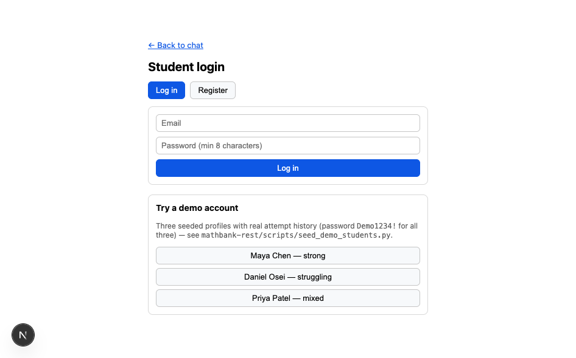
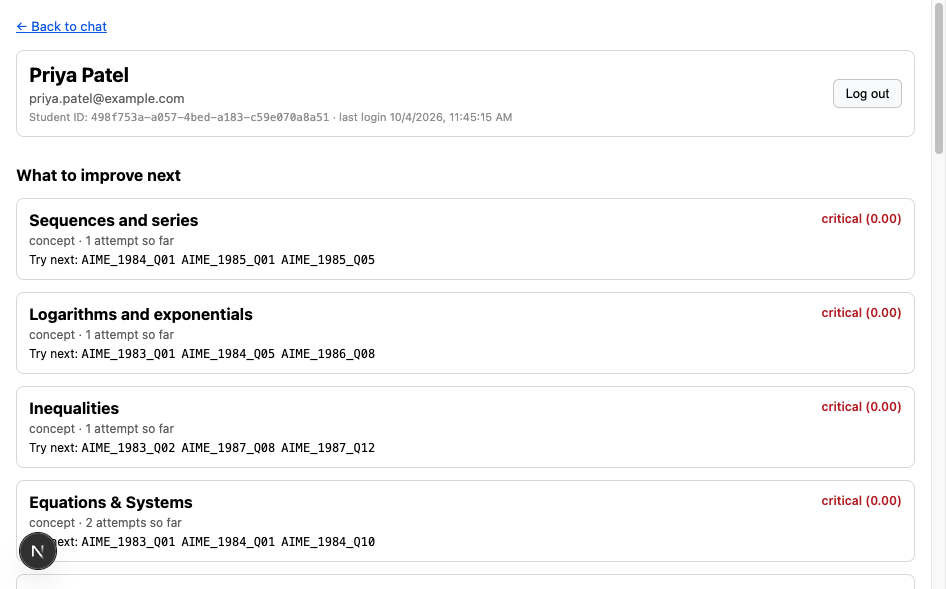
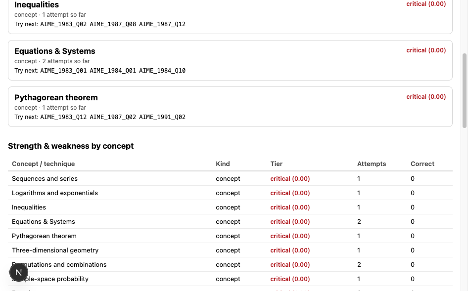
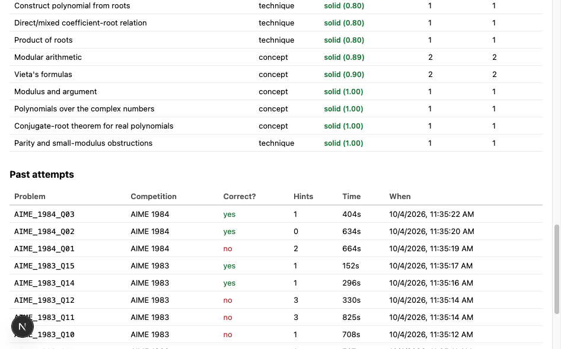
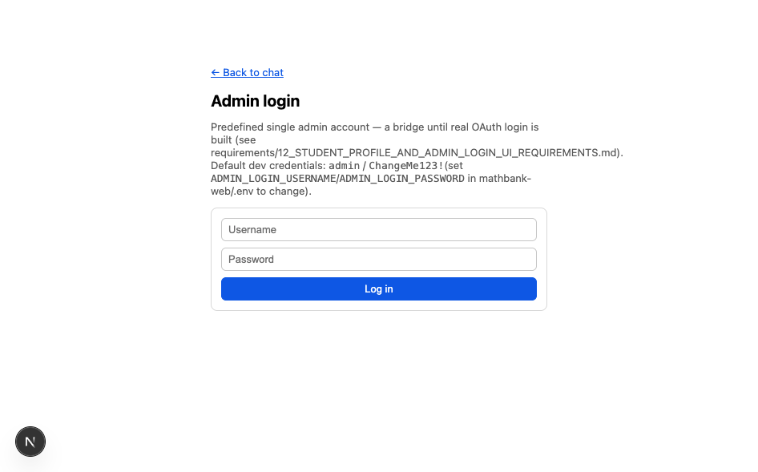
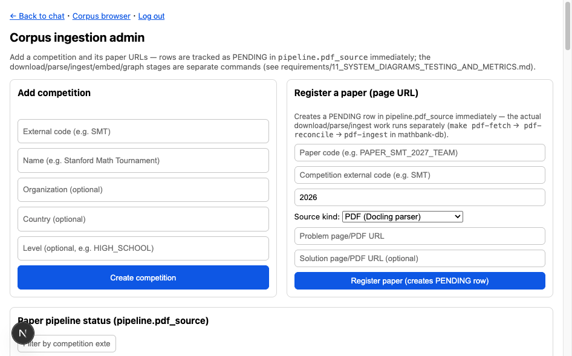

Student profile & admin login — real screens, real data
Every screenshot on this page is a live capture of the actual running
mathbank-web app against real Neon data — not a mockup. The honesty convention
holds here too: both logins are an explicit bridge until real OAuth is built, and
the page says exactly where that line is.
P0Learning help without a profile
/learn is the anonymous pedagogical entry point: choose an obstacle, share an attempt,
reveal hints progressively, and return from a PENDING micro-lesson to the original problem.
It does not need these demo logins and must not treat a session's category selection as durable
mastery evidence. These older profile screenshots show concept-level scores, not P2 skill-level
personalized paths. See the learning loop and evidence contract ·
Open the running local app ↗.
AStudent: login → profile dashboard
Three demo profiles were seeded with deliberately different attempt histories
(mathbank-rest/scripts/seed_demo_students.py) so the dashboard has something real to
show on first use — not an empty state. One click on /login fills in a demo account.
1 · Login / register

Tabbed login/register at /login. The three demo buttons (Maya Chen — strong,
Daniel Osei — struggling, Priya Patel — mixed) pre-fill the email/password so a reviewer never
has to invent credentials to see real data.
2 · Profile header + "what to improve next"

Real name, email, and student_id from learner.student_profile (SPL-01's new
first_name/last_name columns). Below it, GET
/v1/learner/mastery/improvement-plan (MST-10) ranks Priya's weakest concepts with
recommended practice problems attached — not a static list.
3 · Strength & weakness by concept

Every concept and technique Priya has attempted, tiered critical/developing/solid
(mastery.mastery_tier(), MST-09/MST-10) and colour-coded — sourced from
GET /v1/learner/mastery, the same endpoint Turn 2 of the
tutor chat uses.
4 · Past attempts

The one genuinely new REST endpoint this page needed:
GET /v1/learner/attempts (SPL-02) — it didn't exist until this round; every other
prior survey of the learner API had flagged "submit an attempt" but never "list your own
attempts back."
BAdmin: predefined login → existing ingestion UI
5 · Admin login

A single predefined username/password
(ADMIN_LOGIN_USERNAME/ADMIN_LOGIN_PASSWORD in
mathbank-web/.env) — explicitly a bridge, not a permanent design. The page says so
plainly, including the exact env vars to change before deploying anywhere but localhost.
6 · Protected /admin dashboard

The exact same competition/paper registration UI from the ingestion pipeline page — now gated behind login, with a "Log out" link. Nothing about the admin pipeline itself changed.
B2Admin pages added for the textbook corpus and the step runtime
All pages sit behind the same admin login and call mathbank-rest with the server-held
X-Admin-Api-Key through the Next.js /api/rest proxy.
/admin/imports
Package list, issues, reconciliation counts and conflict decisions (keep / accept / merge). Also covers solution-step edits, dependency DAG review, learning-item review and projection requests. Every action is written to ingest.admin_review_action.
/admin/textbooks
Browse Prasolov chapters 1–30: problems, solutions, steps, taxonomy, learning items and diagrams. The coverage tab compares Postgres, vectors and graph. /admin/textbooks/problems/[code] shows a single problem.
/admin/knowledge-gaps
Gap diagnoses and recovery plans across students. Filter by status and drill into a plan's stages and items.
/admin/conversations
Rebuild any student's tutor chat from the ADK session, including tool calls, through learner.agent_session_link. Students see their own chats at /learn/conversations.
/admin/widgets
Gallery of registered widgets and stored widget specs (/v1/widgets/registry, /v1/widgets/specs). The same widgets render in the live classroom.
/admin/pedagogy
Metadata approval for skills, relations and difficulty, with immutable review snapshots. Live classroom console: http://localhost:5174/i/[sid].
Requirements: 24 · 22 · 27 · 28.
CWhere the bridge is, precisely
Student session = the real JWT
The mb_student_token cookie is the actual
mathbank-rest-issued bearer token from POST /v1/learner/login —
httpOnly, never read by browser JS, attached server-side to every
/api/rest/learner/* proxy call. This is real authentication, not a placeholder.
Admin session ≠ mathbank-rest's admin auth
The mb_admin_session cookie is an HMAC-signed marker checked entirely inside
mathbank-web. The actual /v1/admin/* REST authorization is still the
pre-existing, completely unchanged X-Admin-Api-Key static key. Logging into the web
UI doesn't touch mathbank-rest's security model at all — deliberately, to keep this
round's blast radius small.
Full requirement-by-requirement detail, the entity-relationship diagram for the extended
learner.* schema, and both login sequence diagrams are in
requirements/12_STUDENT_PROFILE_AND_ADMIN_LOGIN_UI_REQUIREMENTS.md. The real next step
(SPL-10, not built): replace both predefined-credential logins with actual OAuth.